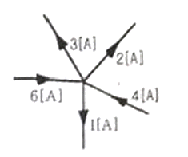
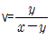
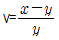
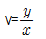
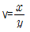

인쇄기능사 (2008-10-05 기출문제)
1과목: 임의구분
1. 마지널 존(marginal zone)현상이 주고 발생되는 인쇄 방식은?
- 그라비어 인쇄
- 오프셋 인쇄
- 스크린 인쇄
- 볼록판 인쇄
(정답률: 알수없음)

2. 물체가 빛을 받아 장파장 쪽을 강하게 반사하고 나머지 파장을 흡수하면 우리 눈에는 무슨 색으로 보이는가?
- 빨간색
- 파란색
- 보라색
- 흰색
(정답률: 알수없음)
3. 다음 색채감정 중 주로 채도가 높고 낮음에 따라 가장 두렷이 나타나는 느낌은?
- 온도감
- 강약감
- 중량감
- 속도감
(정답률: 알수없음)
4. 먼셀표색계에서 “빨강”수낵에 대하여 가장 옳게 표기한 것은?
- 7.5Red 4/14
- 7.0R 4.10
- 8.0RP 4/12
- 5R 4/14
(정답률: 알수없음)
5. 다음 오프셋 인쇄 용지의 pH값 중 잉크의 건조가 가장 빠른 것은?
- pH5
- pH6
- pH7
- pH8
(정답률: 알수없음)
6. 다음 중 오프셋 인쇄를 할 때 에치액의 pH값을 조절하는데 가장 적합한 것은?
- 황산
- 인산
- 칼륨명반
- 염산
(정답률: 알수없음)
7. 고체,액체,기체의 계면에서 분자들의 인력 때문에 나타나는 힘을 무엇이라고 하는가?
- 계면장력
- 침투력
- 전이력
- 배항력
(정답률: 알수없음)
8. 다음 [그림]에서 I 는 몇 A 인가?

- 5
- 10
- 15
- 20
(정답률: 알수없음)
9. 저항이 50Ω인 도체에 100V 의 전압을 가할 때 그 도체에 흐르는 전류는 몇 A 인가?
- 0.5
- 2
- 100
- 5000
(정답률: 알수없음)
10. 책의 등과 표지의 등이 함께 접히므로 책을 펼칠 때 등글자가 가장 많이 상할 염려가 있는 책등 형식은?
- 모등
- 흰등
- 빈등
- 찬등
(정답률: 알수없음)
11. 100Ω의 저항 5개를 병렬로 접속했을 때 합성 저항은 몇 Ω 인가?
- 0.⑤
- 20
- 100
- 500
(정답률: 알수없음)
12. 일반적으로 사전 또는 두꺼운 단행본 등에 사용되는 제책방식으로 가장 바람직한 것은?
- 호부장
- 양장
- 바인더
- 중철
(정답률: 알수없음)
13. 젤라틴을 주성분으로 한 것으로, 경화된 젤라틴 부분은 잉크를 받아들이고, 경화되지 않은 젤라틴 부분은 수분을 흡수하여 잉크를 받아들이지 않게 하여 인쇄하는 방식은?
- 그라비어
- 석판
- 스크린판
- 콜로타이프
(정답률: 알수없음)
14. 일반적인 오프셋 인쇄의 특징이 아닌 것은?
- 간접인쇄 방법이다.
- 스크린인쇄법보다 잉크의 전이량이 작은편이다.
- 인쇄물은 대체적으로 부드러운 느낌을 준다.
- 주로 아연판을 사용한다.
(정답률: 알수없음)
15. 주로 제책에 이용되며 표지의 등에 금색 또는 은색 문자를 넣는 작업을 무엇이라 하는가?
- 눌러박기
- 따내기
- 자기가공
- 표지싸기
(정답률: 알수없음)
16. 잉크의 조성 중 비이클(vehicle)의 역할이 아닌 것은?
- 잉크의 유동성 부여
- 안료의 분산
- 잉크 피막 형성
- 잉크 색농도 부여
(정답률: 알수없음)
17. 다음 중 용지에 대한 인쇄적성으로 가장 거리가 먼 것은?
- 평합도
- 백색도
- 중합도
- 불투명도
(정답률: 알수없음)
18. 다음 중 제지공정시 충전제로 사용되지 않는 것은?
- 점토
- 탄산석회
- 황산바륨
- 코발트
(정답률: 알수없음)
19. 신용카드나 은행카드 등의 정보기록 및 판독용으로 사용하거나 지하철, 전화 등의 카드류와 컴퓨터를 이용한 정보 검색와 보관용으로 인쇄하는 잉크는?
- 자성잉크
- 카본잉크
- 형광잉크
- 적외선잉크
(정답률: 알수없음)
20. 상온에서는 고체이지만 인쇄할 때는 가열, 용융시켜 액체로 만들어 사용하는 잉크는?
- 열 왁스 잉크(Hot wax ink)
- 냉각 굳힘 잉크(Cold set ink)
- 열 굳힘 잉크(Heat set ink)
- 고광택 잉크(High gloss ink)
(정답률: 알수없음)
2과목: 임의구분
21. 제지공정 중 내부 사이징제의 첨가는 어느 공정에서 실시 하는가?
- 비팅
- 초지
- 충전
- 광택
(정답률: 알수없음)
22. 표면장력을 떨어 뜨리는 작용을 하는 물질로서 오프셋 인쇄 잉크 제조시 주원료로 사용하지 않는 물질은?
- 건성유
- 비이클
- 수지
- 계면활성제
(정답률: 알수없음)
23. 다음 중 컴파운드(compound)의 역할이 아닌 것은?
- 잉크의 작용성과 점착성을 개선한다.
- 뒤묻음, 비침, 뜯김 등의 사고를 방지한다.
- 다량 첨가하면 잉크의 건조를 촉진시킨다.
- 왁스의 응집성과 점착성을 감소시켜 준다.
(정답률: 알수없음)
24. 고무 블랭킷이 갖추어야 할 성질이 아닌 것은?
- 신축성이 적당히 있어야 한다.
- 표면의 성상이 좋아햐 한다.
- 친수성, 내굽힘성, 잉크의 전이성이 좋아야 한다.
- 화학 약품이나 용제에 내성이 있어야 한다.
(정답률: 알수없음)
25. 알루미늄판의 표면전처리제로 사용되는 것은?
- 크로낙액
- 브루낙액
- 아라비아고무액
- 나이탈액
(정답률: 알수없음)
26. 알루미늄판에 대한 설명 중 옳은 것은?
- 진한 질산에는 부식이 아주 잘 된다.
- 아연판보다 친수성이 좋다.
- 아연판보다 연성은 좋다.
- PS판용으로 사용되지 않는다.
(정답률: 알수없음)
27. 다음 중에서 친수성이 가장 좋은 판재료는?
- 아연(Zn)
- 니켈(Ni)
- 알루미늄(Al)
- 구리(Cu)
(정답률: 알수없음)
28. 인쇄잉크의 성질 중 외부에서 기계적인 힘을 가하면 유동성이 좋게 되지만 가만히 두면 유동성이 나쁘게 되는 성질은?
- 요변성(Thixotropy)
- 플로우(Flow)
- 택(Tack)
- 크리스탈리제이션(Crystallization)
(정답률: 알수없음)
29. 인쇄 중 뜯김(picking) 현상이 발생되는 원인으로 옳은 것은?
- 인쇄속도가 빠를 때
- 잉크의 택이 약할 때
- 인쇄 속도가 느릴 때
- 압통과 블랭킷통사이의 인압이 낮을 때
(정답률: 알수없음)
30. 다음 중 열경화성 수지로 가볍고, 온.습도에 안정적이며, 유기용제에 강하기 때문에 스퀴지 재질로 많이 사용되는 것은?
- 폴리우레탄
- 폴리에틸렌
- 폴리프로필렌
- 폴리카보네이트
(정답률: 알수없음)
31. 다음 중 가장 오래된 방식의 인쇄기에 해당되는 것은?
- 윤전식 인쇄기
- 원압식 인쇄기
- 평압식 인쇄기
- 그라비어식 인쇄기
(정답률: 알수없음)
32. 오프셋 인쇄기를 크게 3개 부분으로 분류하였을 때 옳은 것은?
- 급지장치, 잉크장치, 인쇄장치
- 인쇄장치, 습수장지, 송달장치
- 급지장치, 인쇄장치, 배지장치
- 급지장치, 건조장치, 배지장치
(정답률: 알수없음)
33. 오프셋 윤전인쇄기의 형식 중 2개의 고무통이 위.아래로 배열되어 고무통사이에 종이가 통과하며, 각 고무통이 서로 압통 역할을 하는 형식은?
- B-B형
- 드럼형
- 3통형
- 5통형
(정답률: 알수없음)
34. 인쇄판을 실린더에 걸 때 작업 방법으로 적절하지 않은 것은?
- 판 두께를 측정한다.
- 실린더의 기준선에 맞추어서 장착한다.
- 판이 늘어나지 않도록 조인다.
- 판 조임쇠를 양끝에서 중앙으로 조여온다.
(정답률: 알수없음)
35. 오프셋 인쇄기계 점검시 파우더 스프레이 장치는 어디에서 점검 해야 하는가?
- 급지부
- 블렝킷부
- 배지부
- 축임물부
(정답률: 알수없음)
36. 물방울을 이슬 모양으로 만들어 노즐에서 직접 판 면에 뿜는 축임장치는?
- 달그렌 장치
- 에어 독터식 축임장치
- 브러스 축임장치
- 스크린식 축임장치
(정답률: 알수없음)
37. 블랭킷 실린더에 블랭킷을 끼울 때 블랭킷 뒷면에 화살표의 방향은?
- 실린더의 회전축과 45도 각도를 이루도록 한다.
- 실린더 회전 방향의 반대 방향 또는 실린더의 회전축과 75도 각도를 이루도록 한다.
- 실린더의 회전 방향으로 가도록 한다.
- 어느 방향이나 관계없다.
(정답률: 알수없음)
38. 잉크 장치에서 직접 판면에 잉크를 전이시키는 목적을 가지고 있는 로울러는?
- 잉크 옮김 로울러
- 잉크 진동 로울러
- 잉크 묻힘 로울러
- 잉크집 로울러
(정답률: 알수없음)
39. 오프셋 인쇄기의 통꾸밈 방식 중 강체보다 탄성처럼 작게 꾸미는 방법은?
- 동경법
- 트루롤링법
- 티타이법
- 압축법
(정답률: 알수없음)
40. 일반적으로 다른 인쇄기에 비하여 평판 인쇄기의 가장 중요한 구조상의 특징은?
- 축임장치
- 잉크장치
- 가능맞춤 장치
- 배지장치
(정답률: 알수없음)
3과목: 임의구분
41. 인쇄 잉크 중의 안료가 인쇄 중 또는 인쇄 후, 물이나 유기용제에 용해되어 스며 나오는 현상은?
- 플로우(flow)
- 미스팅(misting)
- 그리싱(greasing)
- 블리딩(bleeding)
(정답률: 알수없음)
42. 잉크와 물이 접촉할 때 롤러의 심한 교반작용을 받으면 물 속에 잉크 입자가 떠다니며 불규칙하게 더러움이 생기는 현상은?
- 스커밍(scumming)
- 스티킹(sticking)
- 그리싱(greasing)
- 틴팅(tinting)
(정답률: 알수없음)
43. 매끄러운 종이일수록 일어나기 쉬운 문제점으로 인쇄된 정방형 망점이 타원형으로 나타나는 현상을 무엇이라 하는가?
- 더블링
- 슬러
- 피킹
- 스트라이크스루
(정답률: 알수없음)
44. 인쇄된 잉크를 손으로 문지를 때 안료 가루가 떨어지는 현상은?
- 모틀링(mottling)
- 블로킹(blocking)
- 초킹(chalking)
- 파일링(pilling)
(정답률: 알수없음)
45. 윤전인쇄기 배지부에서 2개의 회전 로울러사이로 위쪽에서 접지칼이 내려와서 로울러사이에 종이를 밀어 넣는 접지 방식은?
- 실린더 접지
- 회전날개 접지
- 핀 없는 실린더 접지
- 나이프 접지
(정답률: 알수없음)
46. 다음 급지장치 중 마찰식 급지기에 해당되는 것은?
- 유니버설 급지기
- 덱스터 급지기
- 스트림 급지기
- 로터리 급지기
(정답률: 알수없음)
47. 판을 걸 때 등표를 넣어 인쇄하는 주된 이유는?
- 판걸이의 치수를 잘 맞추기 위하여
- 멋을 내기 위하여
- 접지가 잘 되도록 하기 위하여
- 제책할 때 쪽맞추기의 착오를 방지하기 위하여
(정답률: 알수없음)
48. 스크린 제판의 탈액처리에 사용하는 약품 중 잘못된 것은?
- 합성수지 잉크에는 유기용제를 사용한다.
- 지류 잉크에는 휘발유나 석유를 사용한다.
- 스크린사면에 남아 있는 찌꺼기는 아세톤으로 처리한다.
- 표백제를 사용하여 가능하면 여러번 처리한다.
(정답률: 알수없음)
49. 스크린 인쇄에서 스퀴지의 역할로 가장 거리가 먼 것은?
- 스크린틀 위의 화선부에 잉크를 덮어 준다.
- 압력을 가하여 잉크를 피인쇄체에 전이시킨다.
- 인쇄용지의 건조시간을 조절한다.
- 판 상의 여분의 잉크를 제거할 수 있다.
(정답률: 알수없음)
50. 스크린 인쇄 중 판이 막히는 원인으로 옳은 것은?
- 잉크의 건조가 빠를 때
- 건조 지연제를 사용하였을 때
- 지정된 용제를 사용하였을 때
- 점도가 낮을 때
(정답률: 알수없음)
51. 다음 중 비접촉식 스크린 인쇄방식에 해당되는 것은?
- 곡면 스크린인쇄
- 평면 스크린인쇄
- 두루마리 스크린인쇄
- 정전 스크린인쇄
(정답률: 알수없음)
52. 다음 사고원인 중 불안전한 행동 요인에 해당하는 것은?
- 복장.보호구의 결함
- 작업환경의 결함
- 불안전한 속도의 조작
- 생산공정의 결함
(정답률: 알수없음)
53. 다음 중 잉크의 전이율에 영향을 주는 요인으로 가장 거리가 먼 것은?
- 인쇄 속도
- 인쇄 압력
- 소성 점도
- 드라이어의 첨가량
(정답률: 알수없음)
54. 평판 판재의 감광막 두께를 일정하게 유지하기 위한 요소가 아닌 것은?
- 감광액의 정도
- 감광액 및 판 재료의 온도
- 회전도포기의 회전속도
- 판의 크기
(정답률: 알수없음)
55. 팩시밀리 등에 이용되는 방식으로 다공성 기록지 표면의 세공에 용융 상태로 된 잉크가 침투하여 기록되는 인쇄 방식은?
- 스크린인쇄
- 버블챗 인쇄
- 감열전사 인쇄
- 홀로그램 인쇄
(정답률: 알수없음)
56. 물과 기름의 계면에서 친수기는 물 쪽으로, 친유기는 기름 쪽으로 늘어서는 현상을 무엇이라 하는가?
- 장력
- 계면
- 탄성
- 배합
(정답률: 알수없음)
57. 다음 중 전이계수를 구하는 식으로 옳게 나타낸 것은? (단, 전이계수를 v, 처음에 들어가는 잉크량을 x, 종이나 로울러에 전이되는 잉크량을 y 라고 한다.)




(정답률: 알수없음)
58. A0 용지 5매는 A3용지를 몇 매 만들 수 있는가?
- 20
- 30
- 40
- 50
(정답률: 알수없음)
59. 두께가 160mm 이고, 평량이 80g/m2인 백상지의 밀도는 몇 g/cm3 인가?
- 0.5
- 2
- 50
- 200
(정답률: 알수없음)
60. 공기와 같은 기체상태에서 고체 위에 액체를 올려 놓았을 때 액체와 고체가 형성하는 각도를 무엇이라고 하는가?
- 기울기각
- 측정각
- 가이거 계수각
- 접촉각
(정답률: 알수없음)